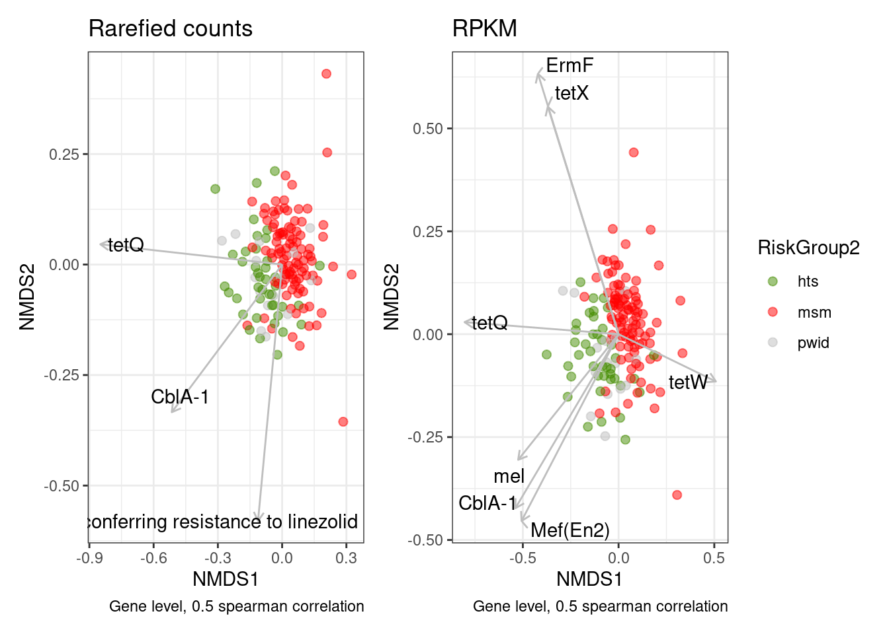
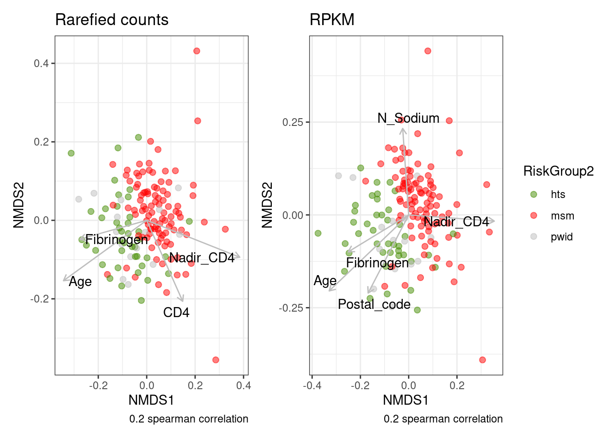
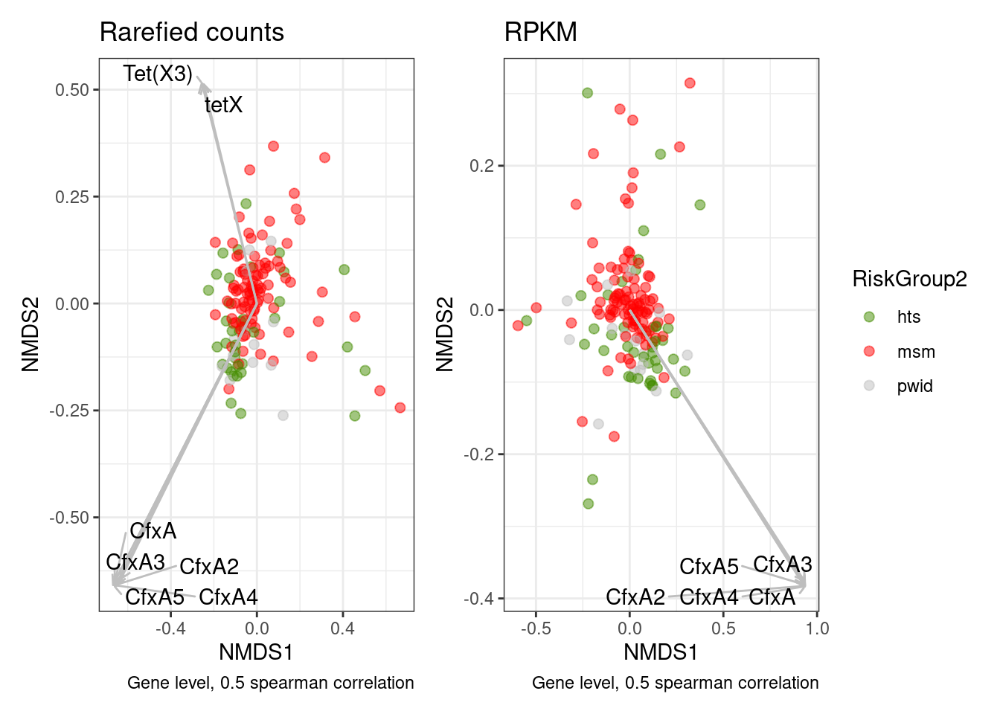

Last updated: 2022-08-30
Checks: 6 1
Knit directory: 2022_Rubio_MetaHIV/
This reproducible R Markdown analysis was created with workflowr (version 1.7.0). The Checks tab describes the reproducibility checks that were applied when the results were created. The Past versions tab lists the development history.
The R Markdown file has unstaged changes. To know which version of the R Markdown file created these results, you’ll want to first commit it to the Git repo. If you’re still working on the analysis, you can ignore this warning. When you’re finished, you can run wflow_publish to commit the R Markdown file and build the HTML.
Great job! The global environment was empty. Objects defined in the global environment can affect the analysis in your R Markdown file in unknown ways. For reproduciblity it’s best to always run the code in an empty environment.
The command set.seed(20220202) was run prior to running the code in the R Markdown file. Setting a seed ensures that any results that rely on randomness, e.g. subsampling or permutations, are reproducible.
Great job! Recording the operating system, R version, and package versions is critical for reproducibility.
Nice! There were no cached chunks for this analysis, so you can be confident that you successfully produced the results during this run.
Great job! Using relative paths to the files within your workflowr project makes it easier to run your code on other machines.
Great! You are using Git for version control. Tracking code development and connecting the code version to the results is critical for reproducibility.
The results in this page were generated with repository version d24c180. See the Past versions tab to see a history of the changes made to the R Markdown and HTML files.
Note that you need to be careful to ensure that all relevant files for the analysis have been committed to Git prior to generating the results (you can use wflow_publish or wflow_git_commit). workflowr only checks the R Markdown file, but you know if there are other scripts or data files that it depends on. Below is the status of the Git repository when the results were generated:
Ignored files:
Ignored: .Rhistory
Ignored: .Rproj.user/
Ignored: output/aribaData/
Ignored: output/grootData/
Unstaged changes:
Modified: analysis/04_alpha_div.Rmd
Modified: analysis/05_beta_div.Rmd
Modified: analysis/06_biplot.Rmd
Modified: analysis/_site.yml
Note that any generated files, e.g. HTML, png, CSS, etc., are not included in this status report because it is ok for generated content to have uncommitted changes.
These are the previous versions of the repository in which changes were made to the R Markdown (analysis/06_biplot.Rmd) and HTML (docs/06_biplot.html) files. If you’ve configured a remote Git repository (see ?wflow_git_remote), click on the hyperlinks in the table below to view the files as they were in that past version.
| File | Version | Author | Date | Message |
|---|---|---|---|---|
| Rmd | d24c180 | Elisa_Linux | 2022-08-23 | biplot finish, beta div and alpha diversity microbiome cluster analysis |
| html | d24c180 | Elisa_Linux | 2022-08-23 | biplot finish, beta div and alpha diversity microbiome cluster analysis |
| Rmd | 9020ce6 | Elisa | 2022-08-22 | biplot 220822 |
| Rmd | c5f0d18 | Elisa | 2022-08-21 | biplot test |
library(tidyverse)
library(vegan)
library(broom)
library(ggrepel)
library(glue)
library(usedist)
library(patchwork)
library(kableExtra)load("output/ariba_dist.RDA")
load("output/groot_dist.RDA")
load("output/summarized_ariba.RDA")
load("output/summarized_groot.RDA")
load("output/rarefied_ariba.RDA")
load("output/rarefied2500_groot.RDA")
metadata<-read_csv("data/Metadata/metadata.csv")Correlations of AMR genes with NMDs axes:
biplot_amr<-function(data, metadata, refdata, clin_var, cor_level){
clin_var<-enquo(clin_var)
dist<-vegdist(t(data[ ,-1]), method = "bray"); dist<- dist_setNames(dist, colnames(data)[-1])
set.seed(200889)
nmds <- metaMDS(dist)
##nmds_positions<-scores(nmds)%>%as_tibble(rownames="SampleID")
nmds_positions<- nmds$points %>%
as_tibble(rownames="SampleID")%>%
rename(NMDS1=MDS1, NMDS2=MDS2)
ref_name<-pull(data, ref_name)
data<-as_tibble(cbind(SampleID = names(data), t(data)))%>%slice(-1)
colnames(data)<-c("SampleID", ref_name)
data<-data%>%pivot_longer(-SampleID)
nmds_shared <- inner_join(data, nmds_positions)%>%mutate(value=as.numeric(value))
cor_x <- nmds_shared %>%
nest(data = -name) %>%
mutate(cor_x = map(data,
~cor.test(.x$value, .x$NMDS1,
method="spearman",
exact=FALSE) %>% tidy())) %>%
unnest(cor_x) %>%
select(name, estimate, p.value)
cor_y <- nmds_shared %>%
nest(data = -name) %>%
mutate(cor_y = map(data,
~cor.test(.x$value, .x$NMDS2,
method="spearman",
exact=FALSE) %>% tidy())) %>%
unnest(cor_y) %>%
select(name, estimate, p.value)
correlations <- inner_join(cor_x, cor_y, by="name")
refdata<-refdata%>%select(name=ref_name, `ARO Name`)
high_corr <- correlations %>%
filter(estimate.x<=0.05 | estimate.y<=0.05)%>%
filter(abs(estimate.x) > cor_level | abs(estimate.y) > cor_level)%>%
left_join(., refdata, by="name")
nmds_positions%>%
left_join(., metadata, by="SampleID")%>%
ggplot( aes(x=NMDS1, y=NMDS2, color=!!clin_var)) +
geom_point(alpha=0.5, size=2)+
geom_segment(data=high_corr,
aes(x=0, xend=estimate.x, y=0, yend=estimate.y),
arrow = arrow(length = unit(0.2, "cm")), alpha=1,colour="gray",
inherit.aes=FALSE)+
geom_text_repel(data=high_corr,
aes(x=estimate.x, y=estimate.y, label=`ARO Name`),
min.segment.length = 0.15, segment.alpha=1, segment.color="gray",
inherit.aes=FALSE) +
theme_bw()+
scale_color_manual(values = c("chartreuse4", "red", "gray"))+
labs(caption = glue("Gene level, {cor_level} spearman correlation"))}
corr_amr<-function(data, top_n, refdata){
dist<-vegdist(t(data[ ,-1]), method = "bray"); dist<- dist_setNames(dist, colnames(data)[-1])
set.seed(200889)
nmds <- metaMDS(dist)
##nmds_positions<-scores(nmds)%>%as_tibble(rownames="SampleID")
nmds_positions<- nmds$points %>%
as_tibble(rownames="SampleID")%>%
rename(NMDS1=MDS1, NMDS2=MDS2)
ref_name<-pull(data, ref_name)
data<-as_tibble(cbind(SampleID = names(data), t(data)))%>%slice(-1)
colnames(data)<-c("SampleID", ref_name)
data<-data%>%pivot_longer(-SampleID)
nmds_shared <- inner_join(data, nmds_positions)%>%mutate(value=as.numeric(value))
cor_x <- nmds_shared %>%
nest(data = -name) %>%
mutate(cor_x = map(data,
~cor.test(.x$value, .x$NMDS1,
method="spearman",
exact=FALSE) %>% tidy())) %>%
unnest(cor_x) %>%
select(name, estimate, p.value)
cor_y <- nmds_shared %>%
nest(data = -name) %>%
mutate(cor_y = map(data,
~cor.test(.x$value, .x$NMDS2,
method="spearman",
exact=FALSE) %>% tidy())) %>%
unnest(cor_y) %>%
select(name, estimate, p.value)
refdata<-refdata%>%select(ref_name, `ARO Name`, `AMR Gene Family`, `Drug Class`,`Resistance Mechanism`)
correlations <- inner_join(cor_x, cor_y, by="name")%>%
mutate(top=abs(estimate.x)+abs(estimate.y))%>%
slice_max(top, n=top_n)%>%
select(-top)%>%
rename(ref_name=name, Cor_NMDS1=estimate.x, Cor_NMDS2=estimate.y, p.value_NMDS1=p.value.x, p.value_NMDS2=p.value.y)%>%
left_join(., refdata, by="ref_name")%>%
select(`ARO Name`, everything())
return(correlations)}Correlations of numerical metadata variables with NMDS axes
biplot_meta<-function(data, metadata, clin_var, cor_level){
clin_var<-enquo(clin_var)
dist<-vegdist(t(data[ ,-1]), method = "bray"); dist<- dist_setNames(dist, colnames(data)[-1])
set.seed(200889)
nmds <- metaMDS(dist)
##nmds_positions<-scores(nmds)%>%as_tibble(rownames="SampleID")
nmds_positions<- nmds$points %>%
as_tibble(rownames="SampleID")%>%
rename(NMDS1=MDS1, NMDS2=MDS2)
meta<-metadata%>%select(SampleID, where(is.numeric))%>%
pivot_longer(-SampleID, values_drop_na = TRUE)
nmds_shared <- inner_join(nmds_positions, meta)%>%mutate(value=as.numeric(value))
cor_x <- nmds_shared %>%
nest(data = -name) %>%
mutate(cor_x = map(data,
~cor.test(.x$value, .x$NMDS1,
method="spearman",
exact=FALSE) %>% tidy())) %>%
unnest(cor_x) %>%
select(name, estimate, p.value)
cor_y <- nmds_shared %>%
nest(data = -name) %>%
mutate(cor_y = map(data,
~cor.test(.x$value, .x$NMDS2,
method="spearman",
exact=FALSE) %>% tidy())) %>%
unnest(cor_y) %>%
select(name, estimate, p.value)
correlations <- inner_join(cor_x, cor_y, by="name")
high_corr <- correlations %>%
filter(estimate.x<=0.01 | estimate.y<=0.01)%>%
filter(abs(estimate.x) > cor_level | abs(estimate.y) > cor_level)
if (nrow(high_corr)==0){stop("No significant correlations")
} else {
nmds_positions%>%
left_join(., metadata, by="SampleID") %>%
ggplot(aes(x=NMDS1, y=NMDS2, color=!!clin_var)) +
geom_point(alpha=0.5, size=2)+
geom_segment(data=high_corr,
aes(x=0, xend=estimate.x, y=0, yend=estimate.y),
arrow = arrow(length = unit(0.2, "cm")), alpha=1,colour="gray",
inherit.aes=FALSE)+
geom_text_repel(data=high_corr,
aes(x=estimate.x, y=estimate.y, label=name),
min.segment.length = 0.15, segment.alpha=1, segment.color="gray",
inherit.aes=FALSE) +
theme_bw()+
scale_color_manual(values = c("chartreuse4", "red", "gray"))+
labs(caption = glue("{cor_level} spearman correlation"))}
}
corr_meta<-function(data, metadata, top_n){
dist<-vegdist(t(data[ ,-1]), method = "bray"); dist<- dist_setNames(dist, colnames(data)[-1])
set.seed(200889)
nmds <- metaMDS(dist)
##nmds_positions<-scores(nmds)%>%as_tibble(rownames="SampleID")
nmds_positions<- nmds$points %>%
as_tibble(rownames="SampleID")%>%
rename(NMDS1=MDS1, NMDS2=MDS2)
meta<-metadata%>%select(SampleID, where(is.numeric))%>%
pivot_longer(-SampleID, values_drop_na = TRUE)
nmds_shared <- inner_join(nmds_positions, meta)%>%mutate(value=as.numeric(value))
cor_x <- nmds_shared %>%
nest(data = -name) %>%
mutate(cor_x = map(data,
~cor.test(.x$value, .x$NMDS1,
method="spearman",
exact=FALSE) %>% tidy())) %>%
unnest(cor_x) %>%
select(name, estimate, p.value)
cor_y <- nmds_shared %>%
nest(data = -name) %>%
mutate(cor_y = map(data,
~cor.test(.x$value, .x$NMDS2,
method="spearman",
exact=FALSE) %>% tidy())) %>%
unnest(cor_y) %>%
select(name, estimate, p.value)
correlations <- inner_join(cor_x, cor_y, by="name")%>%
mutate(top=abs(estimate.x)+abs(estimate.y))%>%
slice_max(top, n=top_n)%>%
select(-top)%>%
rename(Cor_NMDS1=estimate.x, Cor_NMDS2=estimate.y, p.value_NMDS1=p.value.x, p.value_NMDS2=p.value.y)
return(correlations)}c1%>%kable(caption="**Top 20 correlated AMR genes with NMDS axes** (Ariba rarefied) ")%>%kable_paper("striped")%>%scroll_box(width = "100%", height = "500px")| ARO Name | ref_name | Cor_NMDS1 | p.value_NMDS1 | Cor_NMDS2 | p.value_NMDS2 | AMR Gene Family | Drug Class | Resistance Mechanism |
|---|---|---|---|---|---|---|---|---|
| tetQ | tetQ.3000191.Z21523.0_1974.476 | -0.8488106 | 0.0000000 | 0.0458464 | 0.5710804 | tetracycline-resistant ribosomal protection protein | tetracycline antibiotic | antibiotic target protection |
| CblA-1 | CblA_1.3002999.GQ343019.132_1023.1188 | -0.5152174 | 0.0000000 | -0.3340802 | 0.0000215 | CblA beta-lactamase | cephalosporin | antibiotic inactivation |
| CfxA6 | CfxA6.3003097.GQ342996.797_1793.1744 | 0.2756406 | 0.0005177 | 0.5656313 | 0.0000000 | CfxA beta-lactamase | cephamycin | antibiotic inactivation |
| Mef(En2) | Mef_En2_.3004659.AF251288.1.794_2000.5539 | -0.4762362 | 0.0000000 | -0.3498125 | 0.0000081 | major facilitator superfamily (MFS) antibiotic efflux pump | macrolide antibiotic | antibiotic efflux |
| ErmF | ErmF.3000498.M17124.1181_1982.593 | -0.3375877 | 0.0000174 | 0.4411785 | 0.0000000 | Erm 23S ribosomal RNA methyltransferase | lincosamide antibiotic;macrolide antibiotic;streptogramin antibiotic | antibiotic target alteration |
| tetW | tetW.3000194.AJ222769.3.3686_5606.5145 | 0.4876863 | 0.0000000 | -0.2272707 | 0.0044564 | tetracycline-resistant ribosomal protection protein | tetracycline antibiotic | antibiotic target protection |
| mel | mel.3000616.AF227521.1.3269_4487.5180 | -0.4635553 | 0.0000000 | -0.2496288 | 0.0017336 | ABC-F ATP-binding cassette ribosomal protection protein | lincosamide antibiotic;macrolide antibiotic;oxazolidinone antibiotic;phenicol antibiotic;pleuromutilin antibiotic;streptogramin antibiotic;tetracycline antibiotic | antibiotic target protection |
| Staphylococcus aureus 23S rRNA with mutation conferring resistance to linezolid | Staphylococcus_aureus_23S.3004058.NZ_CP009828.1.497113_500039.4128 | -0.1126107 | 0.1629903 | -0.5801296 | 0.0000000 | 23S rRNA with mutation conferring resistance to linezolid antibiotics | glycopeptide antibiotic;lincosamide antibiotic;macrolide antibiotic;oxazolidinone antibiotic;phenicol antibiotic;pleuromutilin antibiotic;streptogramin antibiotic | antibiotic target alteration |
| Clostridioides difficile 23S rRNA with mutation conferring resistance to erythromycin and clindamycin | Clostridioides_difficile_23S.3004654.NR_076234.1.0_2900.5518 | 0.4110336 | 0.0000001 | -0.2618850 | 0.0009959 | 23S rRNA with mutation conferring resistance to macrolide antibiotics | glycopeptide antibiotic;lincosamide antibiotic;macrolide antibiotic;phenicol antibiotic;pleuromutilin antibiotic;streptogramin antibiotic | antibiotic target alteration |
| tetX | tetX.3000205.M37699.585_1752.79 | -0.2611944 | 0.0010282 | 0.3672455 | 0.0000026 | tetracycline inactivation enzyme | glycylcycline;tetracycline antibiotic | antibiotic inactivation |
| ACI-1 | ACI_1.3004359.AJ007350.1.239_1094.4259 | 0.4192827 | 0.0000001 | 0.1897309 | 0.0180530 | ACI beta-lactamase | cephalosporin;penam;penem | antibiotic inactivation |
| Chlamydomonas reinhardtii 16S rRNA (rrnS) mutation conferring resistance to streptomycin | rrnS.3003978.NC_005353.1.38549_40023.4108 | 0.4230586 | 0.0000000 | -0.1590912 | 0.0480136 | 16s rRNA with mutation conferring resistance to aminoglycoside antibiotics | aminoglycoside antibiotic;glycopeptide antibiotic;glycylcycline;nucleoside antibiotic;peptide antibiotic;tetracycline antibiotic | antibiotic target alteration |
| sul2 | sul2.3000412.AY055428.1.20268_21084.4745 | -0.3428473 | 0.0000126 | -0.2162971 | 0.0068684 | sulfonamide resistant sul | sulfonamide antibiotic;sulfone antibiotic | antibiotic target replacement |
| Mycoplasma hominis 23S rRNA with mutation conferring resistance to macrolide antibiotics | Mycoplasma_hominis_23S.3004176.CP011538.1.333282_336166.4166 | 0.4255678 | 0.0000000 | -0.1268753 | 0.1156811 | 23S rRNA with mutation conferring resistance to macrolide antibiotics | glycopeptide antibiotic;lincosamide antibiotic;macrolide antibiotic;phenicol antibiotic;pleuromutilin antibiotic;streptogramin antibiotic | antibiotic target alteration |
| Brachyspira hyodysenteriae 23S rRNA with mutation conferring resistance to tylosin | Brachyspira_hyodysenteriae_23S.3004133.NZ_CP015910.2.2512812_2515808.4183 | 0.4625667 | 0.0000000 | -0.0573043 | 0.4787960 | 23S rRNA with mutation conferring resistance to macrolide antibiotics | glycopeptide antibiotic;lincosamide antibiotic;macrolide antibiotic;phenicol antibiotic;pleuromutilin antibiotic;streptogramin antibiotic | antibiotic target alteration |
| CfxA3 | CfxA3.3003003.AF472622.52_1018.1514 | 0.0295030 | 0.7155478 | 0.4371964 | 0.0000000 | CfxA beta-lactamase | cephamycin | antibiotic inactivation |
| tetO | tetO.3000190.M18896.2.206_2126.4234 | 0.3791586 | 0.0000011 | -0.0845087 | 0.2958015 | tetracycline-resistant ribosomal protection protein | tetracycline antibiotic | antibiotic target protection |
| Neisseria gonorrhoeae 23S rRNA with mutation conferring resistance to azithromycin | Neisseria_gonorrhoeae_23S.3004836.NR_103957.0_2910.5918 | 0.1825647 | 0.0229866 | 0.2810053 | 0.0003974 | 23S rRNA with mutation conferring resistance to macrolide antibiotics | glycopeptide antibiotic;lincosamide antibiotic;macrolide antibiotic;phenicol antibiotic;pleuromutilin antibiotic;streptogramin antibiotic | antibiotic target alteration |
| Campylobacter coli chloramphenicol acetyltransferase | Campylobacter_coli_chloramphenicol.3004454.M35190.1.308_932.4426 | 0.2838980 | 0.0003438 | -0.1785344 | 0.0262406 | chloramphenicol acetyltransferase (CAT) | phenicol antibiotic | antibiotic inactivation |
| CfxA2 | CfxA2.3003002.AF118110.1.71_1037.4470 | -0.1285936 | 0.1107914 | -0.3329093 | 0.0000231 | CfxA beta-lactamase | cephamycin | antibiotic inactivation |
p1+p2
| Version | Author | Date |
|---|---|---|
| d24c180 | Elisa_Linux | 2022-08-23 |
c1%>%kable(caption="**Top 10 correlated numeric variables with NMDS axes** (Ariba rarefied) ")%>%kable_paper("striped")%>%scroll_box(width = "100%")| name | Cor_NMDS1 | p.value_NMDS1 | Cor_NMDS2 | p.value_NMDS2 |
|---|---|---|---|---|
| Age | -0.3436661 | 0.0000120 | -0.1537898 | 0.0560624 |
| Creatinin | 0.2735700 | 0.0007057 | 0.2168206 | 0.0076973 |
| Nadir_CD4 | 0.3844410 | 0.0000081 | -0.0940941 | 0.2926900 |
| CD4_absolute | 0.1797200 | 0.0415516 | -0.1942942 | 0.0273596 |
| Hemat | 0.2164204 | 0.0068359 | 0.1534401 | 0.0566302 |
| CD4 | 0.1486869 | 0.0939298 | -0.2063150 | 0.0194659 |
| Postal_code | -0.1595638 | 0.0560899 | -0.1712296 | 0.0401670 |
| Fibrinogen | -0.2757969 | 0.0008933 | -0.0479137 | 0.5712327 |
| N_Total_protein | 0.1159131 | 0.1908329 | 0.1878552 | 0.0330170 |
| N_Water | 0.1622205 | 0.0662509 | 0.1346881 | 0.1280553 |
p1+p2
c1%>%kable(caption="**Top 20 correlated AMR genes with NMDS axes** (Groot rarefied) ")%>%kable_paper("striped")%>%scroll_box(width = "100%", height = "500px")| ARO Name | ref_name | Cor_NMDS1 | p.value_NMDS1 | Cor_NMDS2 | p.value_NMDS2 | AMR Gene Family | Drug Class | Resistance Mechanism |
|---|---|---|---|---|---|---|---|---|
| CfxA4 | CfxA4.3003005.AY769933.0-966.1592 | -0.6682127 | 0.0000000 | -0.6581044 | 0.0000000 | CfxA beta-lactamase | cephamycin | antibiotic inactivation |
| CfxA5 | CfxA5.3003096.AY769934.27-993.1669 | -0.6597899 | 0.0000000 | -0.6620406 | 0.0000000 | CfxA beta-lactamase | cephamycin | antibiotic inactivation |
| CfxA2 | CfxA2.3003002.AF118110.1.71-1037.4470 | -0.6531659 | 0.0000000 | -0.6574261 | 0.0000000 | CfxA beta-lactamase | cephamycin | antibiotic inactivation |
| CfxA | CfxA.3003001.U38243.149-1115.1354 | -0.6584870 | 0.0000000 | -0.6484129 | 0.0000000 | CfxA beta-lactamase | cephamycin | antibiotic inactivation |
| CfxA3 | CfxA3.3003003.AF472622.52-1018.1514 | -0.6314369 | 0.0000000 | -0.6434381 | 0.0000000 | CfxA beta-lactamase | cephamycin | antibiotic inactivation |
| tetW | tetW.3000194.AJ222769.3.3686-5606.5145 | 0.5717708 | 0.0000000 | 0.5569947 | 0.0000000 | tetracycline-resistant ribosomal protection protein | tetracycline antibiotic | antibiotic target protection |
| tet(W/N/W) | tet(W/N/W).3004442.KU736867.1.19653-21573.4270 | 0.5615591 | 0.0000000 | 0.5345840 | 0.0000000 | tetracycline-resistant ribosomal protection protein | tetracycline antibiotic | antibiotic target protection |
| ErmF | ErmF.3000498.M17124.1181-1982.593 | -0.3021009 | 0.0002333 | 0.4814953 | 0.0000000 | Erm 23S ribosomal RNA methyltransferase | lincosamide antibiotic;macrolide antibiotic;streptogramin antibiotic | antibiotic target alteration |
| Tet(X3) | Tet(X3).3004719.MK134375.1.6173-7340.5596 | -0.2557559 | 0.0019751 | 0.5152785 | 0.0000000 | tetracycline inactivation enzyme | glycylcycline;tetracycline antibiotic | antibiotic inactivation |
| tetX | tetX.3000205.M37699.585-1752.79 | -0.2470811 | 0.0028305 | 0.5125616 | 0.0000000 | tetracycline inactivation enzyme | glycylcycline;tetracycline antibiotic | antibiotic inactivation |
| tetO | tetO.3000190.M18896.2.206-2126.4234 | 0.2829573 | 0.0005895 | 0.4428785 | 0.0000000 | tetracycline-resistant ribosomal protection protein | tetracycline antibiotic | antibiotic target protection |
| Tet(X4) | Tet(X4).3004720.MK134376.1.324-1482.5597 | -0.2384431 | 0.0040019 | 0.4872262 | 0.0000000 | tetracycline inactivation enzyme | glycylcycline;tetracycline antibiotic | antibiotic inactivation |
| ErmB | ErmB.3000375.AF242872.1.2131-2878.5430 | 0.1703754 | 0.0411874 | 0.5337967 | 0.0000000 | Erm 23S ribosomal RNA methyltransferase | lincosamide antibiotic;macrolide antibiotic;streptogramin antibiotic | antibiotic target alteration |
| mdtC | mdtC.3000794.U00096.2158385-2161463.257 | 0.3851705 | 0.0000019 | -0.3053495 | 0.0001980 | resistance-nodulation-cell division (RND) antibiotic efflux pump | aminocoumarin antibiotic | antibiotic efflux |
| Escherichia coli gyrA with mutation conferring resistance to triclosan | gyrA.3004335.U00096.3.2336792-2339420.4469 | 0.3518392 | 0.0000153 | -0.3318968 | 0.0000483 | triclosan resistant gyrA | triclosan | antibiotic target alteration |
| ACI-1 | ACI-1.3004359.AJ007350.1.239-1094.4259 | 0.2553278 | 0.0020111 | 0.3848470 | 0.0000019 | ACI beta-lactamase | cephalosporin;penam;penem | antibiotic inactivation |
| Escherichia coli EF-Tu mutants conferring resistance to Pulvomycin | Escherichia_coli_EF-Tu.3003369.AE014075.1.3901532-3902762.4655 | 0.4719266 | 0.0000000 | -0.1668803 | 0.0455919 | elfamycin resistant EF-Tu | elfamycin antibiotic | antibiotic target alteration |
| Escherichia coli 23S rRNA with mutation conferring resistance to oxazolidinone antibiotics | Escherichia_coli_23S.3004173.AE014075.1.237159-240063.4164 | 0.3784800 | 0.0000029 | -0.2602912 | 0.0016284 | 23S rRNA with mutation conferring resistance to oxazolidinone antibiotics | glycopeptide antibiotic;lincosamide antibiotic;macrolide antibiotic;oxazolidinone antibiotic;phenicol antibiotic;pleuromutilin antibiotic;streptogramin antibiotic | antibiotic target alteration |
| Escherichia coli 23S rRNA with mutation conferring resistance to clindamycin | Escherichia_coli_23S.3004149.AE014075.1.237159-240063.4153 | 0.3371498 | 0.0000359 | -0.2971861 | 0.0002978 | 23S rRNA with mutation conferring resistance to lincosamide antibiotics | glycopeptide antibiotic;lincosamide antibiotic;macrolide antibiotic;phenicol antibiotic;pleuromutilin antibiotic;streptogramin antibiotic | antibiotic target alteration |
| Escherichia coli 23S rRNA with mutation conferring resistance to chloramphenicol | Escherichia_coli_23S.3004150.AE014075.237159-240063.4193 | 0.3166619 | 0.0001103 | -0.3123049 | 0.0001385 | 23S rRNA with mutation conferring resistance to phenicol antibiotics | glycopeptide antibiotic;lincosamide antibiotic;macrolide antibiotic;phenicol antibiotic;pleuromutilin antibiotic;streptogramin antibiotic | antibiotic target alteration |
p1+p2
c1%>%kable(caption="**Top 10 correlated numeric variables with NMDS axes** (Groot rarefied) ")%>%kable_paper("striped")%>%scroll_box(width = "100%")| name | Cor_NMDS1 | p.value_NMDS1 | Cor_NMDS2 | p.value_NMDS2 |
|---|---|---|---|---|
| N_Digestable_polysaccharides | 0.1759048 | 0.0567333 | 0.1953520 | 0.0340106 |
| Fibrinogen | -0.1813307 | 0.0381956 | -0.1716948 | 0.0498919 |
| N_Total_protein | 0.0947927 | 0.3072297 | 0.2455751 | 0.0073533 |
| N_Plant_protein | 0.1501219 | 0.1046769 | 0.1846303 | 0.0453396 |
| N_Iron | 0.1878441 | 0.0416543 | 0.1431501 | 0.1220006 |
| N_Total_carbohydrates | 0.1180161 | 0.2030928 | 0.1949174 | 0.0344182 |
| N_Phosphorus | 0.0964615 | 0.2987529 | 0.2071624 | 0.0243931 |
| Postal_code | -0.1180490 | 0.1743152 | -0.1706404 | 0.0486916 |
| Hemat | 0.1146300 | 0.1712853 | 0.1569772 | 0.0602479 |
| Viral_load | 0.1573564 | 0.0901953 | 0.1108060 | 0.2343026 |
sessionInfo()R version 4.1.2 (2021-11-01)
Platform: x86_64-pc-linux-gnu (64-bit)
Running under: Ubuntu 20.04.3 LTS
Matrix products: default
BLAS: /usr/lib/x86_64-linux-gnu/blas/libblas.so.3.9.0
LAPACK: /usr/lib/x86_64-linux-gnu/lapack/liblapack.so.3.9.0
locale:
[1] LC_CTYPE=es_ES.UTF-8 LC_NUMERIC=C
[3] LC_TIME=es_ES.UTF-8 LC_COLLATE=es_ES.UTF-8
[5] LC_MONETARY=es_ES.UTF-8 LC_MESSAGES=es_ES.UTF-8
[7] LC_PAPER=es_ES.UTF-8 LC_NAME=C
[9] LC_ADDRESS=C LC_TELEPHONE=C
[11] LC_MEASUREMENT=es_ES.UTF-8 LC_IDENTIFICATION=C
attached base packages:
[1] stats graphics grDevices utils datasets methods base
other attached packages:
[1] kableExtra_1.3.4 patchwork_1.1.1 usedist_0.4.0 glue_1.6.2
[5] ggrepel_0.9.1 broom_0.7.12 vegan_2.5-7 lattice_0.20-45
[9] permute_0.9-7 forcats_0.5.1 stringr_1.4.0 dplyr_1.0.8
[13] purrr_0.3.4 readr_2.1.2 tidyr_1.2.0 tibble_3.1.6
[17] ggplot2_3.3.5 tidyverse_1.3.1
loaded via a namespace (and not attached):
[1] nlme_3.1-157 fs_1.5.2 bit64_4.0.5 lubridate_1.8.0
[5] webshot_0.5.2 httr_1.4.2 rprojroot_2.0.2 tools_4.1.2
[9] backports_1.4.1 bslib_0.3.1 utf8_1.2.2 R6_2.5.1
[13] DBI_1.1.2 mgcv_1.8-38 colorspace_2.0-3 withr_2.5.0
[17] tidyselect_1.1.2 bit_4.0.4 compiler_4.1.2 git2r_0.30.1
[21] cli_3.2.0 rvest_1.0.2 xml2_1.3.3 labeling_0.4.2
[25] sass_0.4.1 scales_1.1.1 systemfonts_1.0.4 digest_0.6.29
[29] rmarkdown_2.13 svglite_2.1.0 pkgconfig_2.0.3 htmltools_0.5.2
[33] highr_0.9 dbplyr_2.1.1 fastmap_1.1.0 rlang_1.0.2
[37] readxl_1.3.1 rstudioapi_0.13 farver_2.1.0 jquerylib_0.1.4
[41] generics_0.1.2 jsonlite_1.8.0 vroom_1.5.7 magrittr_2.0.2
[45] Matrix_1.4-0 Rcpp_1.0.8.3 munsell_0.5.0 fansi_1.0.3
[49] lifecycle_1.0.1 stringi_1.7.6 whisker_0.4 yaml_2.3.5
[53] MASS_7.3-56 grid_4.1.2 parallel_4.1.2 promises_1.2.0.1
[57] crayon_1.5.0 haven_2.4.3 splines_4.1.2 hms_1.1.1
[61] knitr_1.38 pillar_1.7.0 reprex_2.0.1 evaluate_0.15
[65] modelr_0.1.8 vctrs_0.3.8 tzdb_0.2.0 httpuv_1.6.5
[69] cellranger_1.1.0 gtable_0.3.0 assertthat_0.2.1 xfun_0.30
[73] later_1.3.0 viridisLite_0.4.0 workflowr_1.7.0 cluster_2.1.2
[77] ellipsis_0.3.2